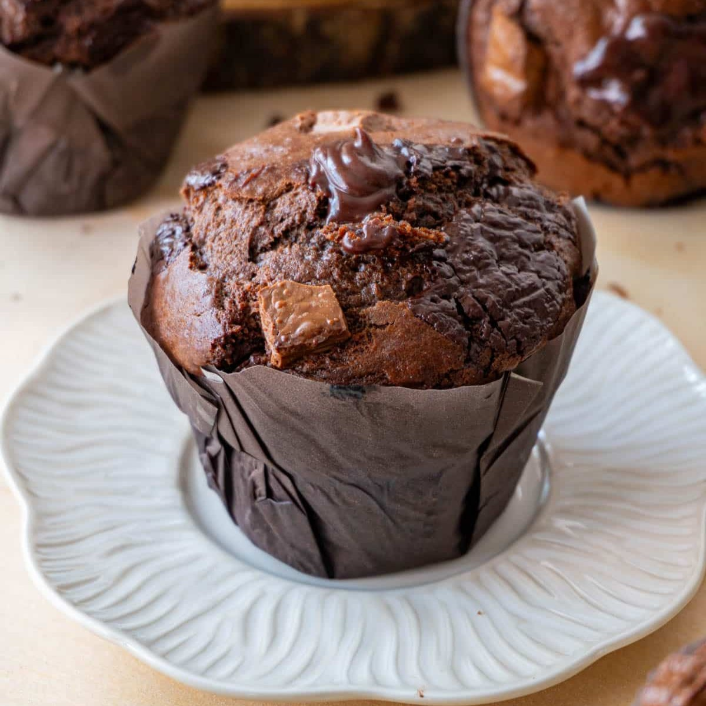

Blueberry Muffins

- All-purpose flour – 2 cups (240 g)
- Granulated sugar – ¾ cup (150 g)
- Baking powder – 2 tsp
- Salt – ½ tsp
- Eggs – 2 large
- Milk or buttermilk – 1 cup (240 ml)
- Vegetable oil or melted butter – ½ cup (120 ml)
- Vanilla extract – 1 tsp
- Blueberries – 1 cup (150 g)
- Optional additions
- Stir in ½ cup chopped nuts (e.g., walnuts)
- Top with 2 tbsp streusel (butter + flour + sugar)
Banana Muffins

- All-purpose flour – 2 cups (240 g)
- Granulated or brown sugar – ½ cup (100 g)
- Baking powder – 1 tsp & baking soda – ½ tsp
- Salt – ½ tsp
- Eggs – 2 large
- Mashed ripe bananas – 1 cup (about 2 large bananas)
- Vegetable oil or melted butter – ½ cup (120 ml)
- Vanilla extract – 1 tsp
- Optional additions
- Fold in ½ cup chocolate or peanut-butter chips
- Sprinkle tops with 2 tbsp oats or coarse sugar
Chocolate Muffins
- All-purpose flour – 1¾ cups (210 g)
- Unsweetened cocoa powder – ½ cup (50 g)
- Granulated sugar – 1 cup (200 g)
- Baking powder – 1 tsp & baking soda – ½ tsp
- Salt – ½ tsp
- Eggs – 2 large
- Milk or buttermilk – ¾ cup (180 ml)
- Vegetable oil or melted butter – ½ cup (120 ml)
- Chocolate chips – ½ cup (optional)
- Optional additions
- Stir in 1 tsp instant espresso powder
- Top with a pinch of sea salt
Bran Muffins
- Wheat bran – 1 cup (90 g)
- All-purpose flour – 1 cup (120 g)
- Brown sugar – ½ cup (110 g)
- Baking powder – 1 tsp & baking soda – ½ tsp
- Salt – ½ tsp
- Eggs – 2 large
- Milk or buttermilk – 1 cup (240 ml)
- Vegetable oil or melted butter – ¼ cup (60 ml)
- Raisins or nuts – ½ cup (optional)
- Optional additions
- Mix in ½ cup mashed banana for extra moisture
- Add 1 tsp cinnamon or nutmeg